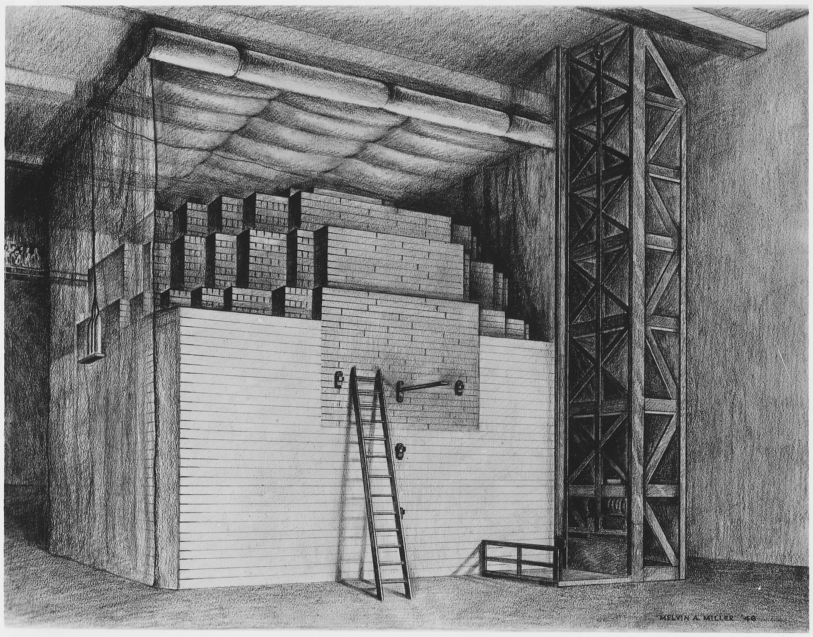
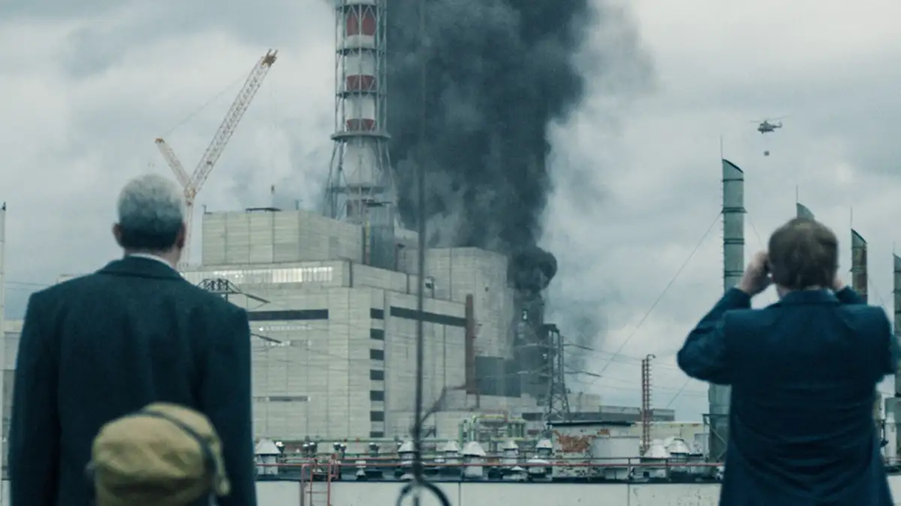

The first nuclear reactor was invented by a team led by Enrico Fermi in 1942. It was called Chicago Pile-1 (CP-1).
Nuclear energy hit a golden age during the 1970s and early 80s, with 1 new reactor being built every 17 days during the 1980s.

The most consequential moment in the history of nuclear energy was Chernobyl, the costliest disaster in human history.
